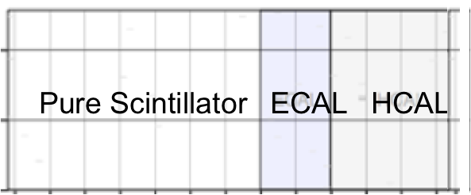

Welcome to Arachne Simple, the MINERνA web event display.
MINERνA
MINERνA is a neutrino scattering experiment which uses the NuMI beamline at Fermilab. MINERνA studies neutrino interactions in support of neutrino oscillation experiments. Simple is a simplified version of the original Arachne used by members of the MINERνA collaboration. It is designed for use by teachers and student.

The Detector
The diagrams at the right shows three directions the detector is viewed from with the z axis pointing out of the detector. The Hit Maps box in Arachne displays the X, U, and V views of the detector. The detector is made of overlapping layers of scintillator, a plastic which absorbs the energy of particles and reemits it in the form of a flash of light. The light deposited in the scintillator is carried through fiberoptic cables to photomultiplier tubes which detect the small flashes of light.
The detector has three sections: a pure scintillator section, the ECAL, and the HCAL. The ECAL has layers of lead in the scintillator while the HCAL has layers of steel in the scintillator. How particles behave in these parts of the detector helps to identify them. They also stop the particles.
Time
When you view an entry (also called a gate) in Arachne you see all the events that occurred in the detector during one pulse of the beam. A slice is a piece of time in that entry that shows the event(s) that happened in that smaller time period. Think of the entry as a long exposure picture and the slice as a shorter exposure.
Energy
The PH Histogram displays the number of hit of a given energy. The energy is automatically shown in MeV (megaelectronvolts), a very useful unit of energy for particle physics. Another common unit is PE (potoelectrons), not to be confused with potential energy.
Navigation
Here are some useful keys to navigate Arachne quickly
| n | Next entry |
|---|---|
| p | Previous entry |
| + | Next slice |
| - | Previous slice |
| a | All hits in the entry |
Here's a quick tutorial for Arachne users.